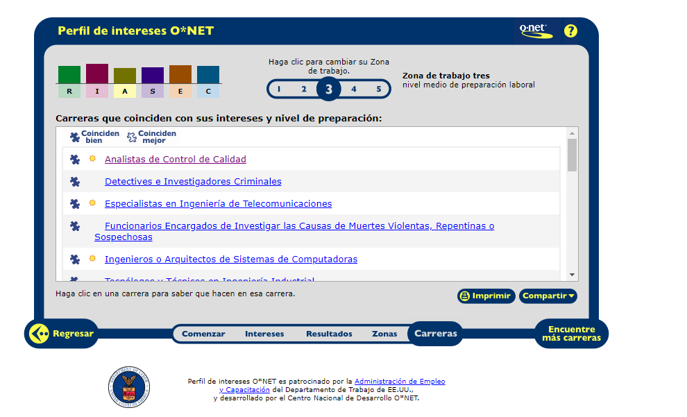
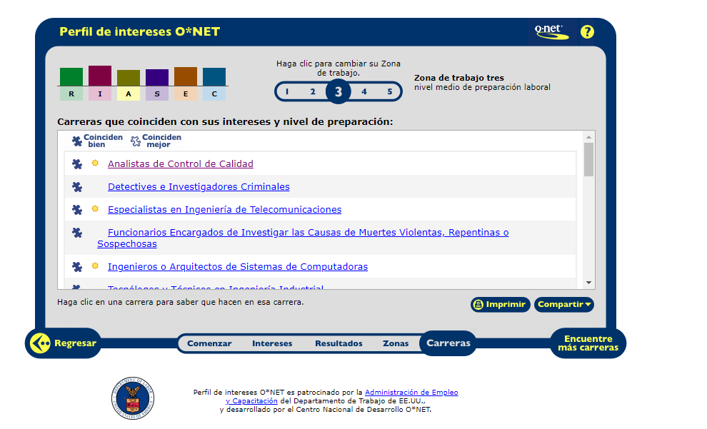

INTELIGENCIA ARTIFICIAL CLASE 1
Aprendizaje clase 15 de agosto
Temas sugeridos
Vimos que datos se repetían y buscamos graficar de cierto que nos brindara dicha información en una gráfica de pastel.

Se agruparon las actividades que eran similares y se contaron manualmente.

Elegimos la columna número 5 y sacamos las palabras repetidas con la ayuda de chatGPT y las rectificamos manualmente e hicimos lo mismo con las palabras únicas (que no se repetían). Luego, hicimos la suma de las palabras repetidas y también sacamos el número de palabras únicas y por último hicimos un gráfico circular 3D con los números de las palabras repetidas.

De manera manual tomé los nombres de IAs distintas y luego conté cuántas veces se repetía cada una, para al final juntar los valores y generar un anillo con Excel donde podemos ver que lo que se repite es chatGPT.

Yo utilicé Excel con fórmulas para sacar las palabras que estaban repetidas separando el texto y luego contando las palabras más importantes de las inteligencias artificiales utilizando esta fórmula: SUMA(SI(NO(ESERROR(BUSCAR("chat"; A25:AY41)));1;0)) + SUMA(SI(NO(ESERROR(BUSCAR("chat gpt"; A25:AY41)));1;0)).

Se realizó utilizando fórmulas de Excel y tablas dinámicas.

1 de 487 David Sarria - Valentina Montealegre: Nos dimos cuenta que hay varias coincidencias y todas apuntan hacia el hecho de que todos contamos con habilidades blandas suficientes y exactas para llevar a cabo un excelente trabajo en equipo.

Básicamente, lo que hicimos fue identificar, contar las palabras y finalmente estructuramos los resultados en una tabla de conteo que permite ver rápidamente la frecuencia de cada palabra y proporciona una visión general de los temas más mencionados, los cuales son la inseguridad, contaminación y transporte.

Aprendizaje clase 22 de agosto
Hoy aprendimos la definición de la IA, hablamos sobre grafos y la máquina de Turing, miramos una comparación de un juego de ajedrez entre un humano y una computadora.
Aprendizaje clase 29 de agosto
REDES NEURONALES
Hoy miramos redes neuronales recordando matrices. Las redes neuronales se componen de capas de nodos, que contienen una capa de entrada, una o más capas ocultas y una capa de salida. Cada nodo se conecta a otro y tiene un peso y un umbral asociados. Las redes neuronales convolucionales constan de varias capas y cada una de ellas percibe pequeñas partes de una imagen. La red neuronal aprende sobre las características visuales de cada clase de imágenes y eventualmente aprende a reconocerlas.
Aprendizaje clase 12 de septiembre
REDES NEURONALES
Hoy, usando Google Colab, miramos e hicimos el código para el entrenamiento y la evaluación de un modelo de red neuronal para la conversión de temperaturas entre grados Celsius y Fahrenheit. Primero, definimos los datos de temperatura en Celsius y sus valores correspondientes en Fahrenheit. Luego, construimos y entrenamos un modelo simple de red neuronal con una sola capa densa durante 1000 iteraciones, utilizando el error cuadrático medio como función de pérdida. Después del entrenamiento, visualizamos la pérdida del modelo, realizamos una predicción para 100 grados Celsius y revisamos los pesos internos del modelo. Finalmente, definimos un modelo de red neuronal más complejo con dos capas ocultas para explorar la posibilidad de mejorar el rendimiento.
PARCIAL
Punto 3

Punto 4

ENCUESTAS
RESULTADOS
 


RESULTADO

PARCIAL SEGUNDO CORTE
PUNTO 5
from logic import *
# Definimos los símbolos
rain = Symbol("rain")
bbc = Symbol("bbc")
unimayor = Symbol("unimayor")
# Conocimientos basados en la situación descrita
knowledge = And(
Implication(Not(rain), bbc), # Si no llueve, los estudiantes visitan a BBC
Or(bbc, unimayor), # Los estudiantes visitaron BBC o Unimayor, pero no ambos
Not(And(bbc, unimayor)), # No visitaron ambos
unimayor # Los estudiantes visitaron Unimayor hoy
)
# Verificamos el modelo para BBC y rain
bbc_visited = model_check(knowledge, bbc)
rain_today = model_check(knowledge, rain)
print(f"¿Los estudiantes visitaron BBC? {bbc_visited}")
print(f"¿Hoy llovió? {rain_today}")
PUNTO 6
import itertools
class Sentence():
# Clase base para oraciones lógicas
def evaluate(self, model):
"""Evaluates the logical sentence."""
raise Exception("nothing to evaluate") # Método a implementar en subclases
def formula(self):
"""Returns string formula representing logical sentence."""
return "" # Método a implementar en subclases
def symbols(self):
"""Returns a set of all symbols in the logical sentence."""
return set() # Método a implementar en subclases
@classmethod
def validate(cls, sentence):
# Verifica que la oración sea una instancia de Sentence
if not isinstance(sentence, Sentence):
raise TypeError("must be a logical sentence")
@classmethod
def parenthesize(cls, s):
"""Parenthesizes an expression if not already parenthesized."""
def balanced(s):
"""Checks if a string has balanced parentheses."""
count = 0
for c in s:
if c == "(":
count += 1
elif c == ")":
if count <= 0:
return False # Hay paréntesis desbalanceados
count -= 1
return count == 0 # Todos los paréntesis están balanceados
# Devuelve la cadena original si ya está balanceada o es una sola letra
if not len(s) or s.isalpha() or (
s[0] == "(" and s[-1] == ")" and balanced(s[1:-1])
):
return s
else:
return f"({s})" # Añade paréntesis si es necesario
class Symbol(Sentence):
# Representa una variable lógica
def __init__(self, name):
self.name = name # Nombre del símbolo
def __eq__(self, other):
# Compara dos símbolos
return isinstance(other, Symbol) and self.name == other.name
def __hash__(self):
return hash(("symbol", self.name)) # Hash para el símbolo
def __repr__(self):
return self.name # Representación del símbolo
def evaluate(self, model):
# Evalúa el valor del símbolo en un modelo dado
try:
return bool(model[self.name])
except KeyError:
raise EvaluationException(f"variable {self.name} not in model")
def formula(self):
return self.name # Devuelve el nombre del símbolo
def symbols(self):
return {self.name} # Devuelve un conjunto con el símbolo
class Not(Sentence):
# Representa la negación de una expresión lógica
def __init__(self, operand):
Sentence.validate(operand) # Valida el operando
self.operand = operand
def __eq__(self, other):
return isinstance(other, Not) and self.operand == other.operand
def __hash__(self):
return hash(("not", hash(self.operand))) # Hash para la negación
def __repr__(self):
return f"Not({self.operand})" # Representación de la negación
def evaluate(self, model):
return not self.operand.evaluate(model) # Evalúa la negación
def formula(self):
return "¬" + Sentence.parenthesize(self.operand.formula()) # Fórmula de la negación
def symbols(self):
return self.operand.symbols() # Símbolos del operando
class And(Sentence):
# Representa la conjunción lógica (AND)
def __init__(self, *conjuncts):
for conjunct in conjuncts:
Sentence.validate(conjunct) # Valida cada conjunción
self.conjuncts = list(conjuncts)
def __eq__(self, other):
return isinstance(other, And) and self.conjuncts == other.conjuncts
def __hash__(self):
return hash(
("and", tuple(hash(conjunct) for conjunct in self.conjuncts))
) # Hash para la conjunción
def __repr__(self):
conjunctions = ", ".join(
[str(conjunct) for conjunct in self.conjuncts]
)
return f"And({conjunctions})" # Representación de la conjunción
def add(self, conjunct):
Sentence.validate(conjunct) # Valida la nueva conjunción
self.conjuncts.append(conjunct) # Añade la conjunción
def evaluate(self, model):
return all(conjunct.evaluate(model) for conjunct in self.conjuncts) # Evalúa todas las conjunciones
def formula(self):
if len(self.conjuncts) == 1:
return self.conjuncts[0].formula() # Devuelve la fórmula si hay una sola conjunción
return " ∧ ".join([Sentence.parenthesize(conjunct.formula())
for conjunct in self.conjuncts]) # Fórmula de la conjunción
def symbols(self):
return set.union(*[conjunct.symbols() for conjunct in self.conjuncts]) # Símbolos en todas las conjunciones
class Or(Sentence):
# Representa la disyunción lógica (OR)
def __init__(self, *disjuncts):
for disjunct in disjuncts:
Sentence.validate(disjunct) # Valida cada disyunción
self.disjuncts = list(disjuncts)
def __eq__(self, other):
return isinstance(other, Or) and self.disjuncts == other.disjuncts
def __hash__(self):
return hash(
("or", tuple(hash(disjunct) for disjunct in self.disjuncts))
) # Hash para la disyunción
def __repr__(self):
disjuncts = ", ".join([str(disjunct) for disjunct in self.disjuncts])
return f"Or({disjuncts})" # Representación de la disyunción
def evaluate(self, model):
return any(disjunct.evaluate(model) for disjunct in self.disjuncts) # Evalúa si alguna disyunción es verdadera
def formula(self):
if len(self.disjuncts) == 1:
return self.disjuncts[0].formula() # Devuelve la fórmula si hay una sola disyunción
return " ∨ ".join([Sentence.parenthesize(disjunct.formula())
for disjunct in self.disjuncts]) # Fórmula de la disyunción
def symbols(self):
return set.union(*[disjunct.symbols() for disjunct in self.disjuncts]) # Símbolos en todas las disyunciones
class Implication(Sentence):
# Representa la implicación lógica (→)
def __init__(self, antecedent, consequent):
Sentence.validate(antecedent) # Valida el antecedente
Sentence.validate(consequent) # Valida el consecuente
self.antecedent = antecedent
self.consequent = consequent
def __eq__(self, other):
return (isinstance(other, Implication)
and self.antecedent == other.antecedent
and self.consequent == other.consequent)
def __hash__(self):
return hash(("implies", hash(self.antecedent), hash(self.consequent))) # Hash para la implicación
def __repr__(self):
return f"Implication({self.antecedent}, {self.consequent})" # Representación de la implicación
def evaluate(self, model):
# Evalúa la implicación: si el antecedente es falso, o si el consecuente es verdadero
return ((not self.antecedent.evaluate(model))
or self.consequent.evaluate(model))
def formula(self):
antecedent = Sentence.parenthesize(self.antecedent.formula())
consequent = Sentence.parenthesize(self.consequent.formula())
return f"{antecedent} => {consequent}" # Fórmula de la implicación
def symbols(self):
return set.union(self.antecedent.symbols(), self.consequent.symbols()) # Símbolos en la implicación
class Biconditional(Sentence):
# Representa la bicondicionalidad (↔)
def __init__(self, left, right):
Sentence.validate(left) # Valida la parte izquierda
Sentence.validate(right) # Valida la parte derecha
self.left = left
self.right = right
def __eq__(self, other):
return (isinstance(other, Biconditional)
and self.left == other.left
and self.right == other.right)
def __hash__(self):
return hash(("biconditional", hash(self.left), hash(self.right))) # Hash para la bicondicional
def __repr__(self):
return f"Biconditional({self.left}, {self.right})" # Representación de la bicondicional
def evaluate(self, model):
# Evalúa la bicondicional: ambos lados deben ser verdaderos o ambos falsos
return ((self.left.evaluate(model)
and self.right.evaluate(model))
or (not self.left.evaluate(model)
and not self.right.evaluate(model)))
def formula(self):
left = Sentence.parenthesize(str(self.left))
right = Sentence.parenthesize(str(self.right))
return f"{left} <=> {right}" # Fórmula de la bicondicional
def symbols(self):
return set.union(self.left.symbols(), self.right.symbols()) # Símbolos en la bicondicional
def model_check(knowledge, query):
"""Checks if knowledge base entails query."""
def check_all(knowledge, query, symbols, model):
"""Checks if knowledge base entails query, given a particular model."""
# Si el modelo tiene una asignación para cada símbolo
if not symbols:
# Si la base de conocimientos es verdadera en el modelo, entonces la consulta también debe ser verdadera
if knowledge.evaluate(model):
return query.evaluate(model)
return True # Si no hay símbolos, retorna True
else:
# Elegir uno de los símbolos restantes
remaining = symbols.copy()
p = remaining.pop()
# Crear un modelo donde el símbolo es verdadero
model_true = model.copy()
model_true[p] = True
# Crear un modelo donde el símbolo es falso
model_false = model.copy()
model_false[p] = False
# Asegura que la implicación se sostiene en ambos modelos
return (check_all(knowledge, query, remaining, model_true) and
check_all(knowledge, query, remaining, model_false))
# Obtener todos los símbolos en conocimiento y consulta
symbols = set.union(knowledge.symbols(), query.symbols())
# Verifica que el conocimiento implica la consulta
return check_all(knowledge, query, symbols, dict())